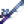

Tienda de pesca
| Tienda de Pesca | |
 | |
| Horario de apertura: | De 09:00 a 17:00 |
| Cerrado: | Los Sábados que no llueve (Está abierto, pero no vende nada) |
| Residentes: | |
La Tienda de Pesca es el hogar de Willy. Se encuentra en los muelles de La playa, al sur de Pueblo Pelícano. Si El Jugador no ha leído la carta de Willy enviada en Primavera 2, no podrá entrar en la tienda. Aunque la puerta se abrirá los Sábados, la tienda permanecerá cerrada a menos que esté lloviendo.
Willy vende diversos artículos relacionados con la pesca como: cañas de pescar, cebos, aparejos, peceras y trampas para cangrejos.
Los siguientes artículos estarán disponibles en cuanto abra la Tienda de Pesca: Sopa de trucha, Caña de bambú, Caña de entrenamiento, Pecera pequeña, Pecera grande y Cama doble del pescador. Algunos artículos, como los aparejos, estarán disponibles cuando el jugador alcance un determinado nivel de Pesca. Esos objetos pueden comprarse en cuanto se alcanza el nivel de habilidad adecuado, sin necesidad de esperar al día siguiente. Otros, como la Batea de cobre y la Pecera de lujo, requieren que el jugador complete tareas específicas para estar disponibles.
Compra
Willy comprará los siguientes objetos al jugador: Todos los Pescados, Cebos, Aparejos, Objetos recolectables de playa (excepto algas), Huevas y Tinta de calamar.[1]
No comprará ningún otro artículo pescable (Basura, Alga verde, Alga o Alga blanca). Tampoco comprará Huevas envejecidas ni Caviar.
Inventario
| Ítem | Descripción | Precio | |
|---|---|---|---|
| Receta del Ahumador de Peces | N/A | ||
| Bastante salada. | N/A | ||
| Hace que los peces piquen antes. Añádelo a una caña de pescar para usarlo. | 2 | ||
| Hace que los peces piquen aún más rápido y aumenta el tamaño de la "barra de pesca". | 4 | ||
| Cebo especializado | Aumenta tus probabilidades de captura de (nombre del pez).
Willy vende una cantidad limitada de cebo de un pez en específico (ej. Cebo de Pez gato, Cebo de Sardina). |
N/A | |
| Colócala en el agua, ponle cebo y revísala al día siguiente para ver si has atrapado algo. Funciona en arroyos, lagos y en el mar. | 3 | ||
| Muestra qué peces se encuentran en la línea antes de ser atrapados. | 6 | ||
| Su forma hace que gire en el agua. Aumenta ligeramente la cantidad de peces que pican al pescar. | 6 | ||
| Hace que los peces escapen más despacio cuando no recoges el sedal. | 6 | ||
| Añade peso a tu «barra de pesca», evitando que rebote en el fondo. | 6 | ||
| Los peces no escapan mientras recoges tesoros. También aumenta ligeramente la probabilidad de encontrar tesoros. | 7 | ||
| Aumenta ligeramente el tamaño de tu «barra de pesca». | 7 | ||
| Pesca más fácil, ya que la «barra de pesca» se engancha a tu presa. Funciona mejor con peces lentos y débiles. | 8 | ||
| La chapa de metal y las cintas de colores crean un espectáculo seductor para los peces. Aumenta la cantidad de peces que pican al pescar. | 8 | ||
| Aumenta la probabilidad de encontrar tesoros pescando. Sin embargo, a los peces no les vuelve locos su sabor. | 9 | ||
| Es mucho más fácil de usar que otros tipos de caña, pero solo puede pescar peces básicos. | N/A | ||
| Caña de bambú | Úsala en el agua para pescar peces. | N/A | |
| Úsala en el agua para pescar peces.(Se puede poner Cebo a la caña) | 2 | ||
| Úsala en el agua para pescar peces.(Se puede poner Cebo y Aparejos a la caña) | 6 | ||
|  Caña de Iridio Avanzada | Úsala en el agua para pescar peces. Hasta dos corchos pueden ser atados a la vez. (Disponible despues de obtener una de la Cueva de la Maestría) |
N/A | |
| Utilízala para recoger menas en los ríos. | N/A | ||
| Puede colocarse dentro de casa. | N/A | ||
| Puede colocarse dentro de casa. | N/A | ||
| Puede colocarse dentro de casa.(Disponible despues del pedido especial "Pez tropical") | N/A | ||
| Puede colocarse dentro de casa.(Se puede colocar dentro de tu casa.) | N/A | ||
| Cama doble del pescador | Puede colocarse dentro de casa. | N/A |
Inventario de Cebo especializado
Cada día, Willy vende una cantidad limitada (8-12) de un Cebo especializado (ej. Pez gato, Lubina, Sardina). El tipo de cebo, corresponderá a los peces de la estación. Abajo se encuentran ejemplos de venta por temporada.
| Temporada | Posible Cebo especializado a la venta |
|---|---|
| Anchoa, Sardina, Besugo, Perca, Lubina, Pez gato, Anguila, Platija, Pez piedra | |
| Pez globo, Atún, Sardina, Besugo, Perca, Trucha arcoíris, Sauri, Salmonete, Pulpo, Superpepino, Platija, Esturión, Dorado, Tilapia, Pez carámbano | |
| Anchoa, Sardina, Besugo, Perca, Lubina, Salmón, Pulpo, Pez gato, Anguila, Carpa de medianoche, Tilapia, Atún blanco, Anguila de lava | |
| Atún, Sardina, Besugo, Perca, Lucio, Cachuelo, Pez gato, Sauri, Salmonete, Calamar, Superpepino, Carpa de medianoche, Esturión, Atún blanco, Bacalao largo, Pez piedra, Pez carámbano, Anguila de lava |
Inventario derivado del jugador
Si el jugador elige vender artículos a Willy, existe la posibilidad de que aparezcan en la lista de artículos a la venta, especialmente si se venden a Willy en grandes cantidades. Cualquiera de estos artículos estará disponible para su compra en cantidades limitadas. Pueden aparecer diálogos adicionales de aldeanos que indiquen que han visto o comprado los artículos.
Máquina de corcho
Dentro de la Tienda de Pesca, a la derecha, hay una máquina de corcho que permite a los jugadores elegir el estilo de corcho que se muestra al pescar.
Al comienzo del juego, sólo se puede elegir el estilo del corcho predeterminado. En la máquina, se puede seleccionar un estilo de corcho específico o seleccionar una opción aleatoria que elige un corcho al azar, para cada lanzamiento (entre las opciones desbloqueadas). Se desbloquean nuevos estilos de corcho al capturar nuevos tipos de peces. Los estilos de corcho siempre se desbloquean en orden. Se desbloqueará un nuevo estilo de corcho cada vez que el jugador capture 2 peces nuevos. Por ejemplo, el décimo estilo de corcho se desbloqueará después de que el jugador atrape 18 peces diferentes.
Hay un total de 39 estilos de corcho diferentes para desbloquear. Para desbloquear todos los estilos de corcho, el jugador debe pescar un total de 77 peces diferentes: los 72 que se encuentran en la pestaña Peces del menú Colecciones y los 5 Peces Legendarios II.
Barco de Willy

Después de completar todos los Lotes del Centro Cívico, al entrar en la Tienda de Pesca se desencadenará una escena, Willy no necesita estar allí y el tiempo no importa. En la escena, hablará con el jugador sobre cómo le va con la pesca y, por último, insinuará que si se restaura el Centro Cívico, le enseñará "algo".
El Barco de Willy se introduce entonces cuando Willy envía por correo al jugador una invitación para que acuda a la trastienda de su tienda. La invitación llega dos días después de que se hayan realizado todas las donaciones a los lotes para el Centro Cívico o de que se haya completado el Formulario de proyectos de desarrollo comunitario de Joja. No es necesario ver la ceremonia de celebración/reconocimiento para generar la carta.
Al llegar a la trastienda, el jugador encuentra un muelle oculto con un viejo barco que está fuera de servicio. Willy puede utilizar el barco para transportarse desde y hacia la Isla Jengibre pagando un ticket de  1000o, pero no tiene los materiales necesarios para repararlo.
1000o, pero no tiene los materiales necesarios para repararlo.
La tarea del jugador consiste en proporcionar los materiales para restablecer el servicio, es decir, los siguientes elementos:
- La base del barco necesita
 Madera noble (200).
Madera noble (200). - La ancla necesita
 Lingote de iridio (5)
Lingote de iridio (5) - La taquilla necesita
 Pila (5)
Pila (5)
Una vez que el jugador deja todos los objetos necesarios en la trastienda, el juego genera una escena nocturna en la que Willy y Robin trabajan para restablecer el servicio de barcos. Ten en cuenta que esta escena se retrasa un día si hay otra escena nocturna programada para esa misma noche.
A partir del día siguiente al que transcurre la escena, el jugador puede comprar un boleto de barco en la trastienda. Las puertas de la tienda se abren a las 8 de la mañana, en lugar de a las 9, para poder empezar antes. El horario de Willy no cambia. Él pilota el barco, pero está disponible automáticamente cada vez que el jugador compra un billete y no necesita estar en la tienda de antemano.
Al pescar dentro de la sala del barco hay un 20% de probabilidad de atrapar un Salvavidas.[2]
Curiosidades
- Interactuar con la escalera en la parte trasera de la tienda da como resultado un mensaje que sugiere que Willy vive arriba.
- Si el jugador intenta entrar en la Tienda de Pesca en Primavera 1, Año 1, una nota en la puerta dice "Estoy pescando. Volveré mañana".
Referencias
Galería

Interior
Historial
- 1.04: Se corrigió un error en el que la tienda se consideraba una ubicación de agua.
- 1.4: El inventario derivado del jugador vendidas a Willy ahora aparecen en el menú de la tienda de pesca en lugar de en la Tienda local Pierre's. Se agregaron la Caña de entrenamiento y la Batea de cobre al inventario de la tienda.
- 1.5: Pecera grande, Pecera pequeña, Pecera de lujo y Cama doble del pescador añadidas al inventario de la tienda. Aparece el barco de Willy.
- 1.6: Se introducen al inventario de la tienda: Receta para Ahumador de Peces, Cebo de lujo, Corcho sónar, Cebo especializado y decoraciones. Se agrega la Máquina de corcho.